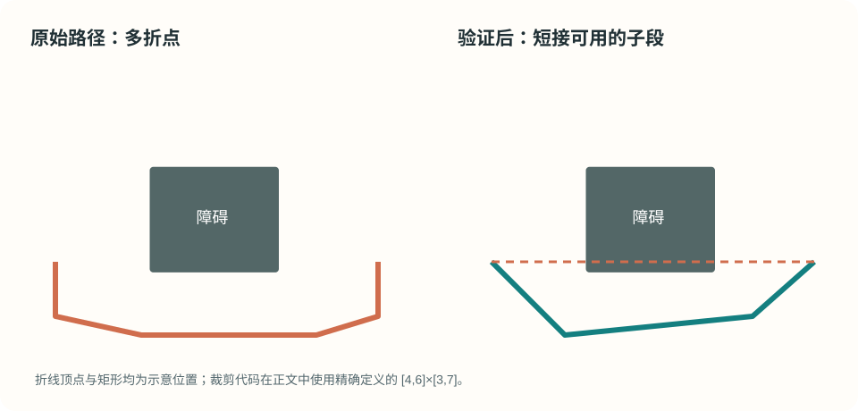
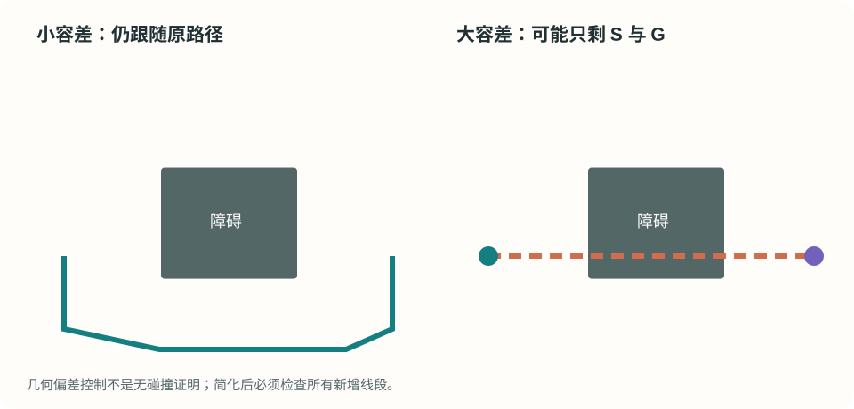
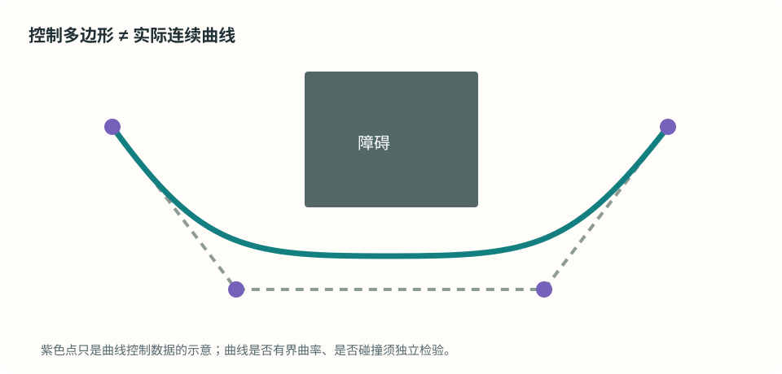

路径后处理：变短、变平滑，为什么仍可能撞墙？
将路径几何简化、碰撞安全和车辆可执行性分离：理解 shortcut、Douglas–Peucker 的反例、曲线插值及曲率限制，并在代码中验证合法捷径。
路径更短，为什么反而可能更危险
采样规划器输出的路线常由许多折线段组成。执行前进行后处理，可能减少不必要的拐点、降低长度或提升曲线连续性。但有一个十分危险的直觉陷阱：看起来更直的两点连线，可能直接穿过原路径绕开的障碍。另外，即使路径完全无碰撞，某个急转角也可能超出车体最小转弯半径或执行器可实现的曲率变化。
必须把三个不同的质量目标区分：路径几何成本（例如长度）、碰撞安全（每个状态及连续运动有效）、运动可执行性（曲率、速度、加速度及机器人动力学满足约束）。算法可以在其中一个维度上改善而损害另一个维度。
PATH POST-PROCESSING · 15

Shortcut：用局部碰撞检测换掉绕路的多段折线
给定路径顶点序列 q0→q1→...→qn，选择两个非相邻状态 qi,qj，如果局部规划器验证直接运动 qi→qj 可行，并且其代价优于原来的子路径，就将中间那些顶点替换掉。重复该操作，可得到更精简的路线。
常见几何路径短接策略有随机选择子段、尝试最远可见顶点和对时间参数上的部分子段进行 short-cut。实现不能只用端点距离比较；若代价含风险、曲率或时间，必须计算完整替代运动的真正目标成本。
对欧氏长度代价，三角不等式意味着直接线段不长于原有折线。但只有整段运动合法，这种几何缩短才值得接纳。对于不同配置空间的轨迹，局部运动可能是弯曲轨迹而非欧氏直线。
PATH POST-PROCESSING · 15

Douglas–Peucker 的“误差 ≤ ε”不是碰撞安全保证
Douglas–Peucker（Douglas & Peucker，1973）本来针对折线数据简化：从端点连线开始，计算中间点偏离这条线段的距离，如果最大偏差超过容差 ε，就在偏差最大的点处分裂递归；否则丢弃内部点。这样可以控制几何近似的误差，但没有在判据里检查障碍。
反例：起点 S=(1,5)，终点 G=(9,5)，中间折线从矩形障碍 [4,6]×[3,7] 下方绕行。设 ε=5，算法可能保留 S 和 G 两点，生成穿过整块矩形的水平直线。顶点简化程度非常高，却与避障规划器输出的“有效路径”条件冲突。
PATH POST-PROCESSING · 15

Bezier 与 B-spline 为什么不是“自动平滑安全器”
二次、三次 Bézier 曲线及 B-spline 能帮助构造导数更连续的空间曲线；例如 n 次 Bézier 的几何点定义是控制点的 Bernstein 基加权和。这使得曲线更容易表示，但它一般不经过所有控制点，可能与输入折线路线偏离；控制多边形合法不等于曲线在障碍外。
曲率约束和碰撞问题必须在生成的整条连续曲线上判断，适当加入障碍安全裕量或采用能够给出保守包围界的几何验证。调大平滑系数会让轨迹更“圆”，但如果切到障碍里面，就不是合法改进。
PATH POST-PROCESSING · 15

曲线连续不够：还要约束曲率及其变化
对参数化平面曲线 r(t)=(x(t),y(t))，在导数存在且速度向量不为零时，其几何曲率为：
如果轮式车有最小转弯半径 R_min，在所采用的运动学模型下通常要求 |κ| ≤ 1/R_min。折线的拐角处切线不连续，不能直接视为有界连续曲率的可执行轨迹。即使一条 B-spline 达到 C² 连续，还须单独检查最大曲率、曲率变化、车身扫掠范围和速度、加速度、jerk 约束。
几何路径参数 t 不等于真实时间；把长度路径转换成时序轨迹，还需速度规划与时间参数化。
交互：观察相同障碍地图上合法捷径的差别
下方小图使用固定的六个点和矩形禁区。按钮在“原折线”与“经过碰撞检查的捷径”之间切换；不允许切换成非法 S→G 穿墙线段。
原始路径：6 个节点；每段保持不穿越禁区。
示意不显示真实机器人足迹；长度和穿墙性以正文 Python 中的精确示例为准。
独立实现“保留几何合法性”的后处理测试
Python 3.10+ 标准库。下面的实验给出了二维矩形禁区的解析线段/矩形相交测试（含边界），用它分别审查原路径、容差过大的 Douglas–Peucker 输出与从最远候选开始测试的贪婪 shortcut。与上一批的离散采样检测不同，这次采用参数区间裁剪可以对这一张轴对齐矩形图的直线段给出更强的几何判定。
from math import dist, hypot
# 矩形禁区包含边界；点机器人示例
BOX = (4.,3.,6.,7.)
PATH = [(1.,5.), (1.,2.), (3.,1.5),
(7.,1.5), (9.,2.), (9.,5.)]
def segment_hits_box(a,b,box=BOX):
"""Liang-Barsky 参数区间裁剪，碰到边界也算冲突。"""
xmin,ymin,xmax,ymax=box
dx,dy=b[0]-a[0],b[1]-a[1]
t0,t1=0.,1.
for p,q in ((-dx,a[0]-xmin),(dx,xmax-a[0]),
(-dy,a[1]-ymin),(dy,ymax-a[1])):
if abs(p)<1e-12:
if q<0: return False
else:
t=q/p
if p<0: t0=max(t0,t)
else: t1=min(t1,t)
if t0>t1: return False
return True
def point_to_segment(p,a,b):
dx,dy=b[0]-a[0],b[1]-a[1]
length2=dx*dx+dy*dy
if length2==0: return dist(p,a)
t=max(0.,min(1.,((p[0]-a[0])*dx+(p[1]-a[1])*dy)/length2))
return dist(p,(a[0]+t*dx,a[1]+t*dy))
def douglas_peucker(path,tolerance):
if len(path)<=2: return list(path)
scores=[point_to_segment(p,path[0],path[-1])
for p in path[1:-1]]
j=max(range(len(scores)),key=scores.__getitem__)+1
if scores[j-1]<=tolerance:
return [path[0],path[-1]]
left=douglas_peucker(path[:j+1],tolerance)
right=douglas_peucker(path[j:],tolerance)
return left[:-1]+right
def validated_shortcut(path):
"""尽可能连接最远的可见原顶点；只缩短，不离开原顶点集合。"""
out=[path[0]]
i=0
while i<len(path)-1:
j=next(j for j in range(len(path)-1,i,-1)
if not segment_hits_box(path[i],path[j]))
out.append(path[j])
i=j
return out
def length(path):
return sum(dist(a,b) for a,b in zip(path,path[1:]))
assert all(not segment_hits_box(a,b)
for a,b in zip(PATH,PATH[1:]))
naive=douglas_peucker(PATH,5.0)
assert naive==[PATH[0],PATH[-1]]
assert segment_hits_box(*naive) # 简化结果反而穿墙！
safe=validated_shortcut(PATH)
assert safe[0]==PATH[0] and safe[-1]==PATH[-1]
assert length(safe)<length(PATH)
assert all(not segment_hits_box(a,b)
for a,b in zip(safe,safe[1:]))
print("raw length:",round(length(PATH),3),
"safe-shortcut length:",round(length(safe),3),
"unverified DP crosses obstacle:",True)断言覆盖三件事：原折线合法；仅按 ε 进行 DP 简化产生穿墙直线；经过检测的 shortcut 仍合法、首尾固定且比原折线短。这个几何检验不包括实体机器人足迹、动态障碍和曲线碰撞，不能直接当作整车安全证据。
后处理如何通过工程验收
| 约束 | 应该验证的性质 |
|---|---|
| 始末状态 | 始点、终点、朝向等边界条件不意外改变 |
| 碰撞 | 全部新线段或曲线段与足迹/障碍几何一致 |
| 长度/风险 | 明确改善的是哪种代价，避免以点数冒充成本 |
| 曲率 | 连续性、转弯半径、最大曲率与曲率变化 |
| 时间参数化 | 速度、加速度、jerk 与控制器采样时序 |
| 稳健性 | 数值误差、贴边界路径的安全裕量、动态地图更新 |
OMPL PathSimplifier提供 reduceVertices、shortcutPath / partialShortcutPath、smoothBSpline 等具体接口，它们使用运动有效性与优化目标相关的配置；应按版本阅读参数和行为，而不是将所有函数都叫“平滑”。